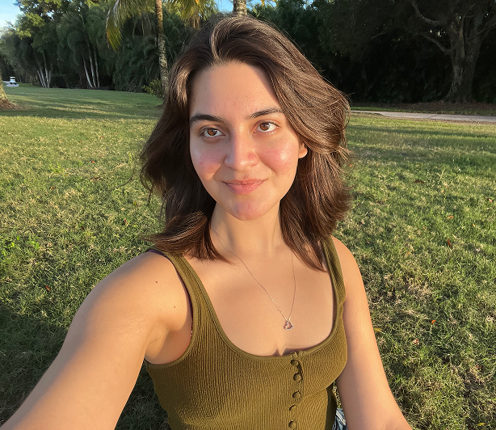

Hi, I'm Luisana! Welcome to my website.
As a fourth-year student at Syracuse University studying journalism and data analytics, I'm interested in working at the intersection of the two fields, with a particular focus on data visualizations, data journalism and social science research.

During my time at SU, I was president of the school’s chapter of the National Association of Hispanic Journalists, served as the assistant copy editor for The Daily Orange, and conducted online political misinformation research under Prof. Jennifer Stromer Galley. After graduating, I hope to pursue my master’s in Spanish language or literature abroad. Outside of my academic and professional endeavors, I love trying new things and meeting new people. I also tend to pick up new hobbies or interests quickly. These are some of my current ones:
- reading
- writing
- photography and film
- going on walks
- playing electric guitar
- discovering new music